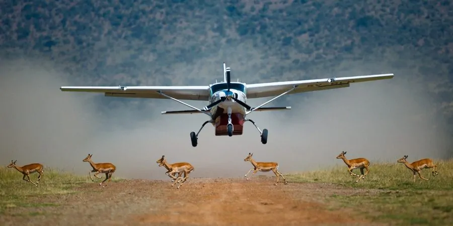
08 Days & 07 NightsThe Classic Kenya Safari
A luxury overland expedition traversing Kenya’s iconic wilderness blocks. Blends giant elephant track encounters under Mt. Kilimanjaro with high-security rhinos at Lake Nakuru and apex predator fields in the Maasai Mara.
 09 Days & 08 Nights
09 Days & 08 Nights
Kenya Wilderness & Wildlife Discovery
This journey combines the unique landscapes and wildlife of northern Kenya with the classic safari experiences of the south. Travel by comfortable 4×4 Landcruiser to explore Samburu’s arid beauty, Lake Nakuru’s birdlife, and the legendary Maasai Mara.
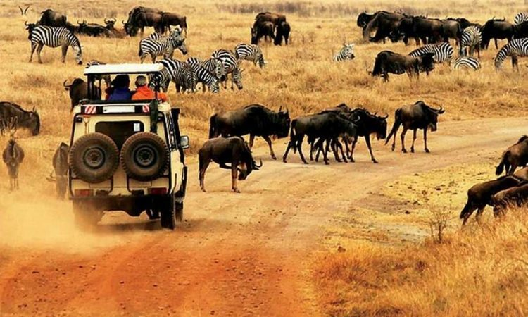
12 Days & 11 NightsIconic Kenya Safari Experience
This comprehensive 12-day flagship expedition offers deep immersion into Kenya's ultimate wildlife sanctuaries. Travel by custom 4×4 Landcruiser to witness Amboseli's giant tuskers, private conservancy conservation breakthroughs, and the legendary drama of the Maasai Mara plains.
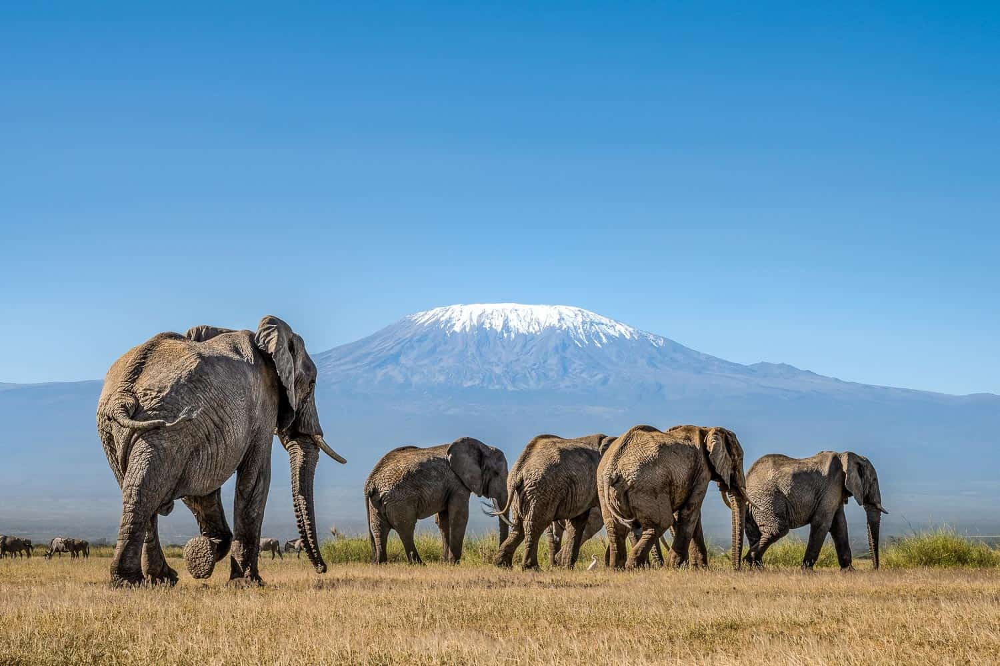
14 Days & 13 NightsGuardians of the Wild Expedition
This comprehensive 14-day flagship expedition offers a deeply adventurous journey through Kenya's premier conservancies and iconic sanctuaries. Trace the historical conservation landscapes from Meru and the northern frontiers to the dramatic predator plains of the Maasai Mara.
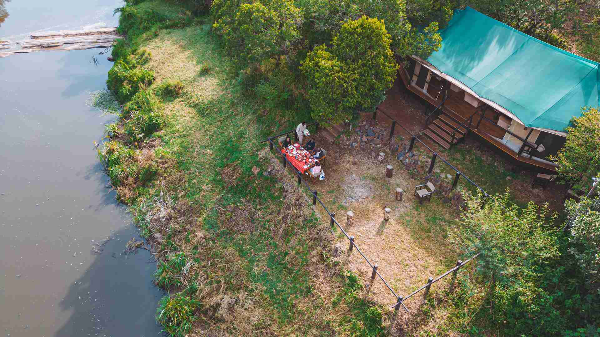
04 Days & 03 NightsSoroi Mara Bush Camp Safari
This focused 4-day safari centers on delivering an authentic and immersive wildlife experience. Nestled in the heart of the Maasai Mara, enjoy premium tented luxury at Soroi Mara Bush Camp alongside unparalleled access to prime predator territories and winding river bends.
 04 Days & 03 Nights
04 Days & 03 Nights
Soroi Barefoot Luxury Mara
The Soroi Mara Bush Camp is a uniquely special place to enjoy wonderful comfort as well as adventure. This exclusive 4-day itinerary centers on delivering an authentic barefoot luxury experience, putting you in the middle of premier savannah action without sacrificing boutique refinements.
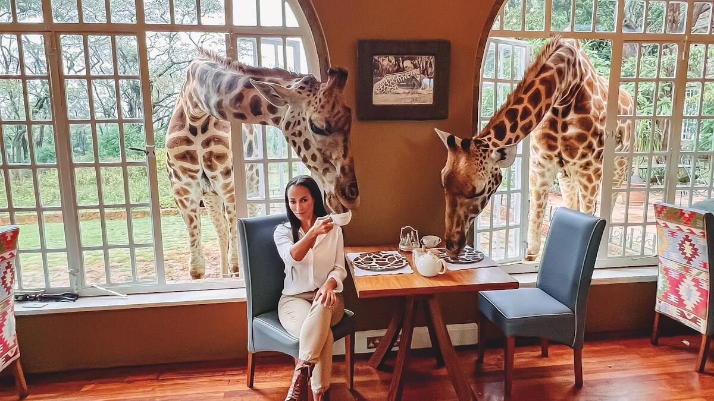
05 Days & 04 NightsGiraffe Manor and Amboseli Luxury Safari
This 5-day luxury safari is for travelers looking for a mix of wildlife, amazing landscapes, and unique experiences. Enjoy the iconic hospitality of Giraffe Manor in Nairobi before journeying to Amboseli to witness grand elephant herds against the monumental backdrop of Mount Kilimanjaro.
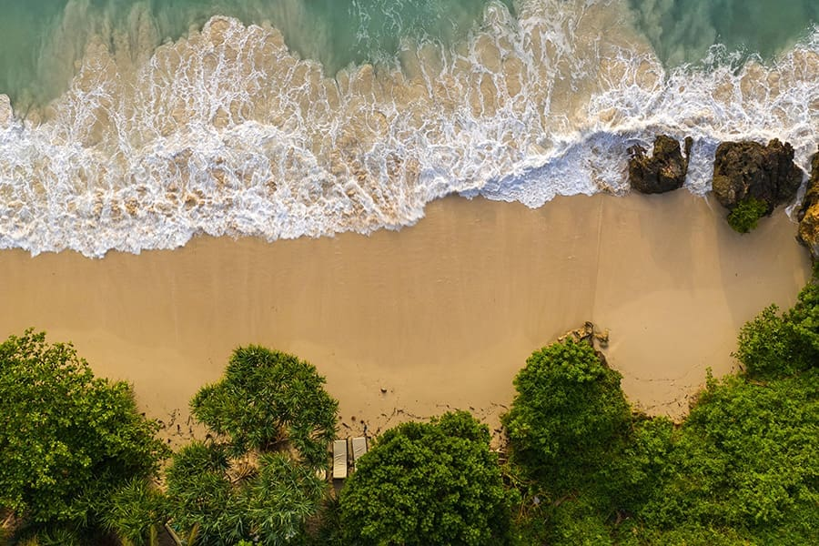
11 Days & 10 NightsLuxury Kenya Bush and Beach Safari
This Kenya safari is the perfect mixture of Kenya's stunning wilderness and its relaxing coastal beaches. You will journey from the dense predator plains of the legendary Maasai Mara directly to the pristine, white sands of the Indian Ocean for an unforgettable dual-world expedition.
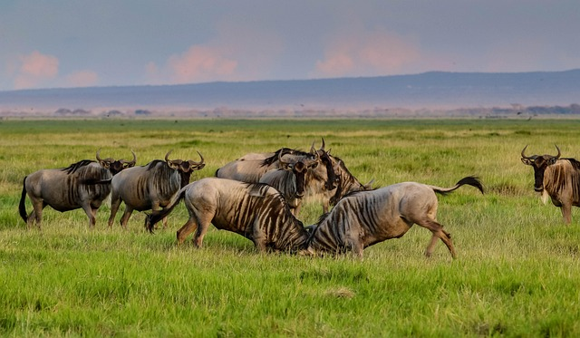
09 Days & 08 NightsFull Kenya Highlights Safari Experience
9 Days Full Kenya Highlights Safari Experience: An immersive 9 days safari through different landscapes and habitats. From the wild Tsavo West to Amboseli and across the Great Rift Valley, witness Kenya's premier geological wonders and rich, dense ecosystems.
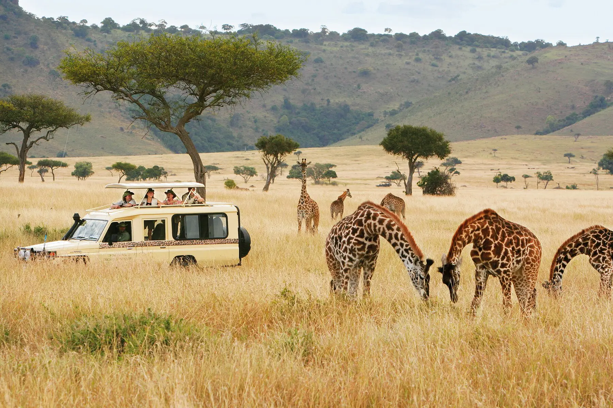
07 Days & 06 NightsWildlife Adventure Offbeat Kenya
7 Days Wildlife Adventure Offbeat Kenya: Take a step out of the track for 7 days. Go on for 2 nights in the Samburu and journey deeper into the rugged, hidden conservation sanctuaries of the northern frontier to witness rare species and untouched ecosystems.
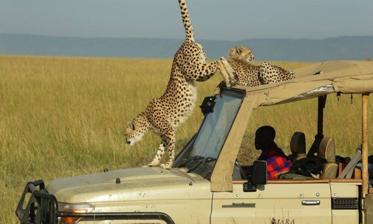
09 Days & 08 NightsKenya Wildlife Safari
Uncover Kenya's lesser-explored treasures on this journey, blending hidden reserves with iconic destinations, all while luxuriating in top-notch accommodations. It's an adventure designed to unveil wild ecosystems, unique endemic species, and premier game-viewing sectors.
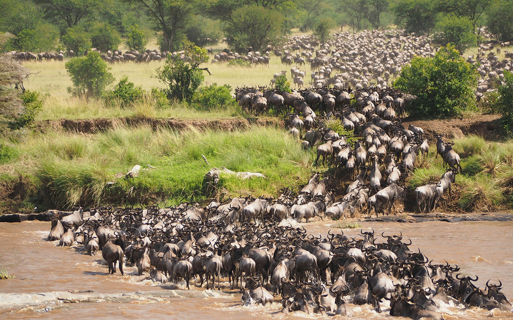
09 Days & 08 NightsKenyan Wilderness African Scenery Escorted Odyssey
9 Days Kenyan Wilderness African Scenery Escorted Odyssey: A 9 days voyage across the best wildlife destinations in Kenya. As always, Kenya's beautiful tented camps will host you in deep comfort, offering expert guiding and seamless hospitality across premier conservation frontiers.
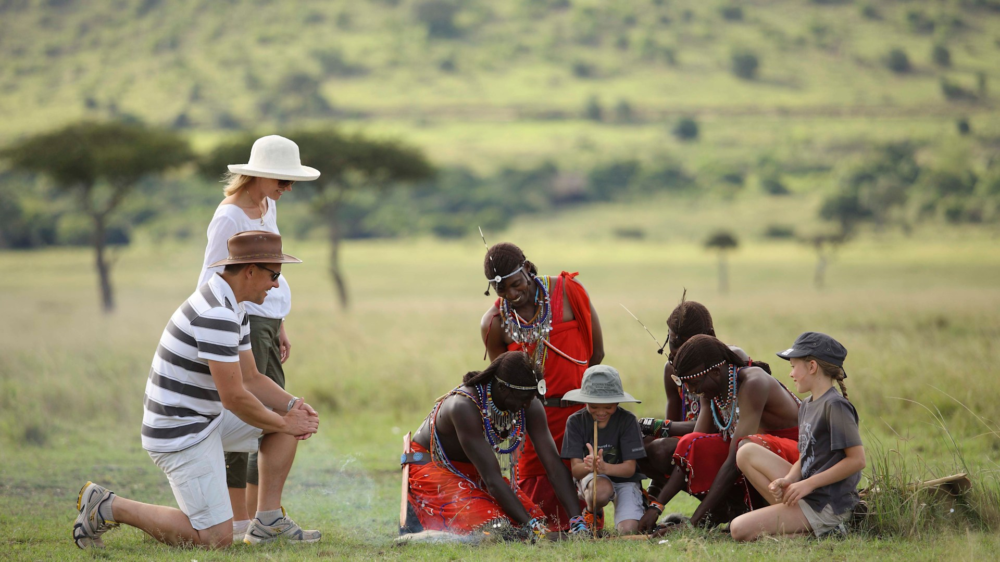
11 Days & 10 NightsMagical Kenya Wildlife and Cultural Adventure
11 Days Magical Kenya Wildlife & Cultural Adventure: Embark on our 11 days magical Kenya wildlife and cultural adventure for a Kenya safari experience with immersive community encounters. Blend legendary game tracking across top sanctuaries with authentic heritage interactions.
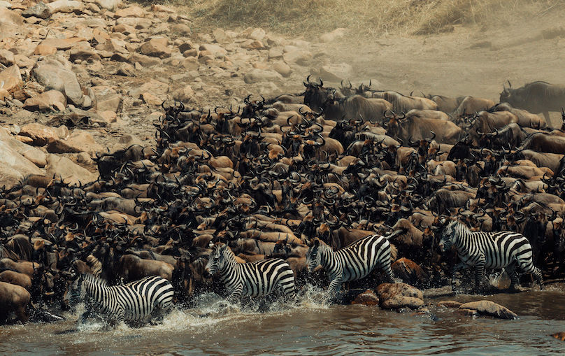
05 Days & 04 NightsKenya African Scenery Signature Majestic Safari
5 Days Kenya African Scenery Signature Majestic Safari On our 5 days Kenya safari, we set off exploring the famous Lake Naivasha, Lake Nakuru and the legendary Maasai Mara. Experience an unmatched sequence of Great Rift Valley birdlife, boat expeditions, and premium big cat tracking.
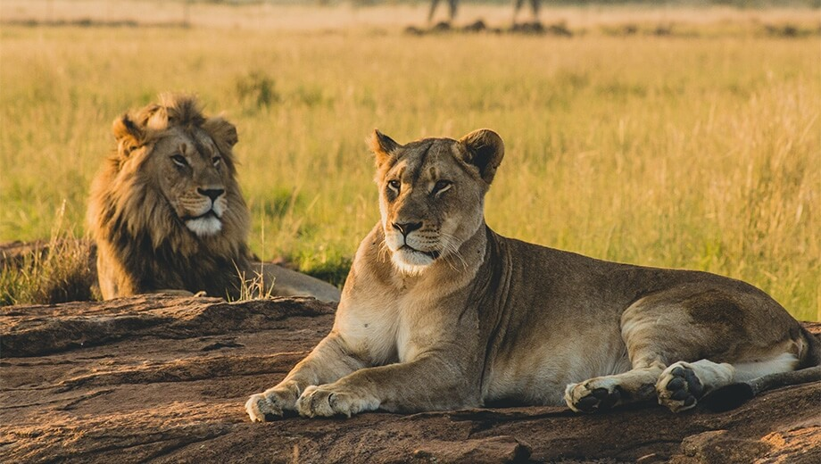
04 Days & 03 NightsHighlights Of Kenya
4 Days Highlights Of Kenya Even If you can only dedicate 4 days for a Kenya safari experience you can still enjoy 2 of the country's most legendary wildlife hubs. Venture efficiently from the rich rhino and bird sanctuaries of Lake Nakuru straight into the rolling, predator-dense plains of the Maasai Mara.
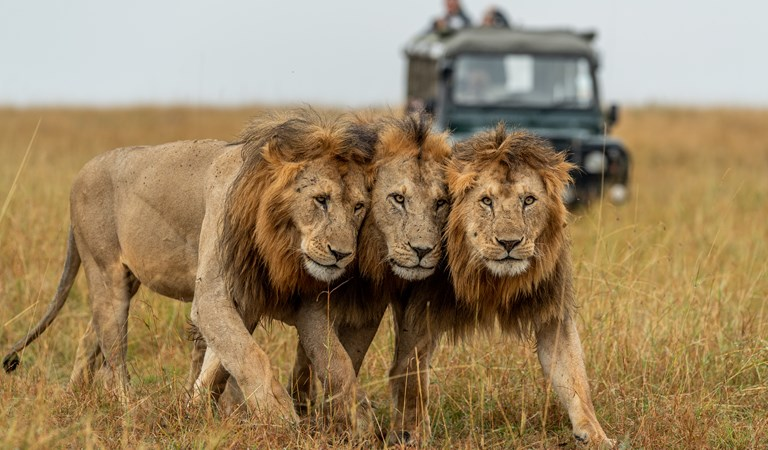
12 Days & 11 NightsBig Cats Kenya & Tanzania Wildlife and Cultural Photo Safari
This comprehensive 12 Days Big Cats Kenya & Tanzania Wildlife and Cultural Photo Safari captures the ultimate cross-border expedition. Frame magnificent apex predators across the endless savannahs of the Maasai Mara and Serengeti, concluding with dramatic volcanic craters and authentic indigenous heritage encounters.